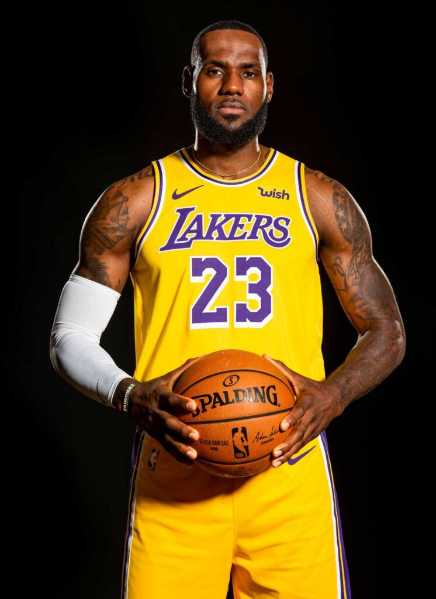

LeBron Raymone James (Akron, 30 de dezembro de 1984) é um basquetebolista norte-americano que atua como ala pelo Los Angeles Lakers
Apelidado de King James, é amplamente reconhecido como um dos maiores jogadores de basquetebol de todos os tempos, ocupando a segunda posição na lista divulgada pela ESPN em 2020, atrás apenas de Michael Jordan. LeBron conquistou quatro títulos da NBA, quatro prêmios de MVP da NBA e quatro prêmios de MVP de Finais da NBA, além de três medalhas de ouro olímpicas com a Seleção Norte-Americana. LeBron é o maior pontuador e o quarto jogador com mais assistências na história da NBA. Entre 2011 e 2020, ele disputou nove finais da NBA, a única exceção foi em 2019. LeBron detém o recorde de jogador com mais aparições no NBA All-Star Game (20) e NBA All-Team (19), além de ter seis aparições no NBA All-Team Defensive. LeBron é o único atleta com sete prêmios de Melhor Jogador da NBA pela ESPY, o Oscar do Esporte Americano. Em 2019, ele foi nomeado o Atleta da Década de 2010 pela Associated Press. Em 2021, ele foi homenageado como um dos 75 maiores jogadores da história da NBA.
Na sua primeira temporada em 2004, ele venceu o prêmio de Revelação da NBA. Em 2007, LeBron liderou os Cavaliers que possuía um elenco limitado a uma inédita final da NBA, perdida para o San Antonio Spurs por 4–0. Nos anos de 2009 e 2010, ele foi nomeado o MVP da NBA, após liderar os Cavaliers há duas temporadas consecutivas com mais de 60 vitórias. Em 2010, LeBron anunciou em um especial na ESPN intitulado The Decision, que deixaria os Cavaliers para se juntar a Dwyane Wade e Chris Bosh no Miami Heat. Em quatro anos em Miami, ele liderou os Heat a dois títulos da NBA em 2012 e 2013, vencendo nesses dois anos, os prêmios de MVP da NBA e de MVP de Finais da NBA. Ainda em 2013, ele liderou os Heat a uma sequência de 27 vitórias seguidas, a segunda mais longa na história da NBA. Em 2014, LeBron anunciou seu retorno ao Cleveland Cavaliers. Em 2016, após estarem perdendo por 3–1 nas finais da NBA, LeBron liderou os Cavaliers ao seu primeiro título da NBA, acabando com um jejum de 52 anos sem conquistas esportivas em Cleveland, sendo nomeado pela terceira vez o MVP de Finais da NBA. Em 2017, na vitória dos Cavaliers sobre o Boston Celtics por 135–102, ele se tornou o maior pontuador da história dos playoffs com 5 989 pontos, superando os 5 987 pontos de Michael Jordan. Em 2018, LeBron assinou com o Los Angeles Lakers. Em 2020, ele liderou os Lakers ao título da NBA, tornando-se o primeiro jogador a ser campeão e MVP de Finais da NBA por três equipes diferentes da NBA. Em 2023, na derrota dos Lakers para o Oklahoma City Thunder por 133–130, ele se tornou o maior pontuador da história da temporada regular com 38 390 pontos, superando os 38 387 pontos de Kareem Abdul-Jabbar.